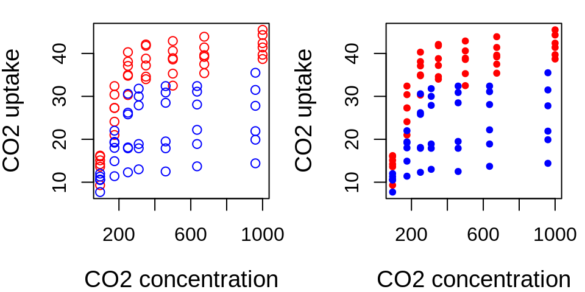

Chapter 26 Syntax of a function: function()
function_name <- function(argument1, argument2, ...) {
body # What we want the function to do
return(values) # Optional
}function_nameis the name of the function, and will be stored in theRenvironemnt as an object with this name;arguments take the defined values that can be used within the function;bodycontains the statements that define what the function does;outputcontains the returned value from the function. Ifreturn()is absent, then the last expression is returned.
26.1 Arguments of a function()
function_name <- function(argument1, argument2, ...) {
body # What we want the function to do
return(values) # Optional
}Arguments are the input values of your function and will have the information your function needs to be able to perform correctly.
A function can have between zero and an infinity of arguments. See the following example:
operations <- function(number1, number2, number3) {
result <- (number1 + number2) * number3
print(result)
}## [1] 9Challenge 4
Using what you learned previously on flow control, create a function print_animal() that takes an animal as argument and gives the following results:
## [1] "woof"## [1] "meow"Challenge 4: Solution
Using what you learned previously on flow control, create a function print_animal() that takes an animal as argument and gives the following results:
## [1] "woof"## [1] "meow"26.2 Default argument values in a function
Arguments can be provided with a default value, or even be optional.
Default values are useful when using a function with the same settings. The flexibility to depart from default values is still there, if needed.
operations <- function(number1, number2, number3 = 3) {
result <- (number1 + number2) * number3
print(result)
}
operations(number1 = 1, number2 = 2, number3 = 3)## [1] 9## [1] 9## [1] 626.3 The ellipsis argument: ...
The special argument ... allows you to pass arguments from other undefined functions, i.e. allowing for an indefinite number of arguments inputs.
## [1] "I" "want"
## [3] "a break!"percentages <- function(x, mult = 100, ...) {
percent <- round(x * mult, ...)
paste(percent, "%", sep = "")
}## [1] "54%" "53%" "47%"## [1] "54.3%" "53.4%" "46.6%"The special argument ... allows you to pass on arguments to another function used inside your function. Here we use ... to pass on arguments to plot() and points().
plot.CO2 <- function(CO2, ...) {
plot(x = CO2$conc, y = CO2$uptake, type = "n", ...)
for (i in 1:length(CO2[, 1])) {
if (CO2$Type[i] == "Quebec") {
points(CO2$conc[i], CO2$uptake[i], col = "red", type = "p",
...)
} else if (CO2$Type[i] == "Mississippi") {
points(CO2$conc[i], CO2$uptake[i], col = "blue",
type = "p", ...)
}
}
}
26.4 Return values
The last expression evaluated in a function becomes the return value:
## [1] 0## [1] 10function() itself returns the last evaluated value even without including return()
26.5 Return values
.small[
It can be useful to explicitly return() if the routine should end early, jump out of the function and return a value.
Functions can return only a single object (and text). But this is not a limitation because you can return a list containing any number of objects.
## $result
## [1] 3
##
## $x
## [1] 1
##
## $y
## [1] 226.6 Challenge
Using what you have just learned on functions and control flow, create a function named bigsum that takes two arguments a and b and:
- Returns \(0\) if the sum of
aandbis strictly less than \(50\); - Else, returns the sum of
aandb.
Challenge 5: Solution
Using what you have just learned on functions and control flow, create a function named bigsum that takes two arguments a and b and:
- Returns
0if the sum ofaandbis strictly less than50; - Else, returns the sum of
aandb.
Answer 1
Answer 2